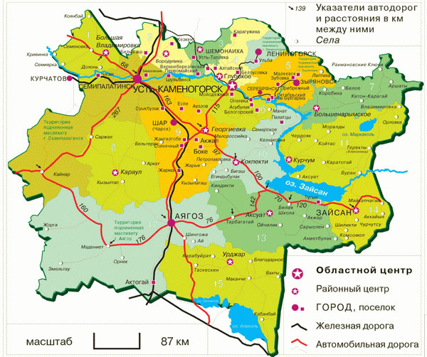
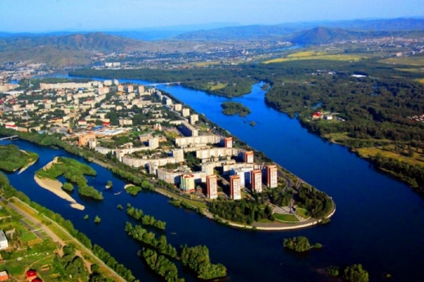

Восточно Казахстанская область


Это территория, которая связывает Южную Сибирь и Алтай с Семиречьем и Центральной Азией. Один из ключевых промышленных регионов Республики Казахстан.
Регион обладает значительными запасами полезных ископаемых (минералов). Около 40% водных ресурсов и леса сосредоточены в данной области.
В целом, это — резко континентальный климат с большими сезонными и суточными перепадами температур. Лето — жаркое и умеренно сухое, тогда как зима является холодной и снежной, в предгорьях умеренно холодной.
Большую территорию Восточного Казахстана занимают Алтайские и Саур-Тарбагатайские горы с вечными ледниками на вершинах, Калбинский горный хребет, мелкохолмистые равнины, Казахский мелкосопочник, широкие котловины, обширные равнины вдоль рек.